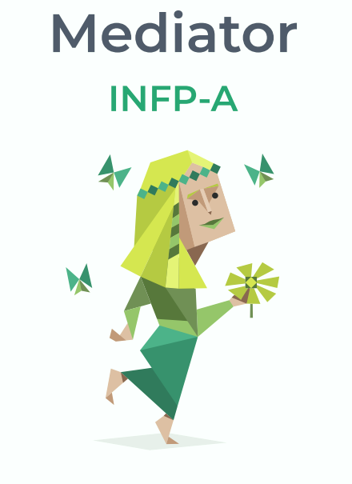

TEST ONE
Myer Briggs

Mind
This trait determines how we interact with our environment.
EXTRAVERTED 49% INTROVERTED 51%
Energy
This trait shows where we direct our mental energy.
INTUITIVE 69% OBSERVANT 31%
Nature
This trait determines how we make decisions and cope with emotions.
THINKING 41% FEELING 59%
Tactics
This trait reflects our approach to work, planning and decision-making.
JUDGING 47% PROSPECTING 53%
Identity
This trait underpins all others, showing how confident we are in our
abilities and decisions.
ASSERTIVE 74% TURBULENT 26%
The Gift of Empathy
Mediators share a sincere curiosity about the depths of human nature.
Introspective to the core, they’re exquisitely attuned to their own
thoughts and feelings, but they yearn to understand the people around
them as well. Mediators are compassionate and nonjudgmental, always
willing to hear another person’s story. When someone opens up to them
or turns to them for comfort, they feel honored to listen and be of help.
For Mediators, an ideal relationship of any kind is one in which both
people feel comfortable sharing not just their wildest hopes and
dreams but also their secret fears and vulnerabilities.
Empathy is among this personality type’s greatest gifts, but at times it can
be a liability. The troubles of the world weigh heavily on Mediators’
shoulders, and these personalities can be vulnerable to internalizing
other people’s negative moods or mindsets. Unless they learn to set
boundaries, Mediators may feel overwhelmed by just how many wrongs
there are that need to be set right.
Speaking Their Truth
Few things make Mediators more uneasy than pretending to be someone
they aren’t. With their sensitivity and their commitment to authenticity,
people with this personality type tend to crave opportunities for creative
self-expression. It comes as no surprise, then, that many famous
Mediators are poets, writers, actors, and artists. They can’t help but muse
about the meaning and purpose of life, dreaming up all sorts of stories,
ideas, and possibilities along the way.
Mediators have a talent for self-expression. They may reveal their
innermost thoughts and secrets through metaphors and fictional
Through these imaginative landscapes, Mediators can explore their own
inner nature as well as their place in the world. While this is a beautiful
trait, these personalities sometimes show a tendency to daydream and
fantasize rather than take action. To avoid feeling frustrated, unfulfilled,
or inc apable, Mediators need to make sure that they take steps to turn
their dreams and ideas into reality.
In Search of a Calling
People with this personality type tend to feel directionless or stuck until
they connect with a sense of purpose for their lives. For many Mediators,
this purpose has something to do with uplifting others and their ability to
feel other people’s suffering as if it were their own. While Mediators want
to help everyone, they need to focus their energy and efforts – otherwise,
they can end up exhausted.
Fortunately, like flowers in the spring, Mediators’ creativity and idealism
can bloom even after the darkest of seasons. Although they know the
world will never be perfect, Mediators still care about making it better
however they can. This quiet belief in doing the right thing may explain
why these personalities so often inspire compassion, kindness, and
beauty wherever they go.
Mediators You May Know
J.R.R. Tolkien
William Shakespeare
Tom Hiddleston
Julia Roberts
Frodo Baggins (The Lord of the Rings)
Amélie Poulain (Amélie)
Fox Mulder (X-Files)
Arwen (The Lord of the Rings)
Anne (Anne of Green Gables)
Sybil Branson (Downton Abbey)
Lance Sweets (Bones)
Konstantin Levin (Anna Karenina)